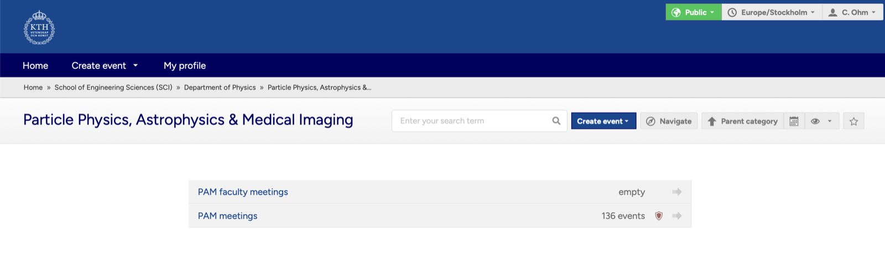
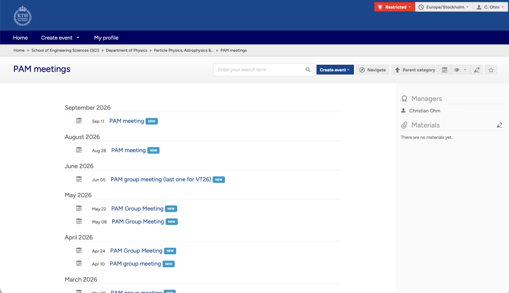
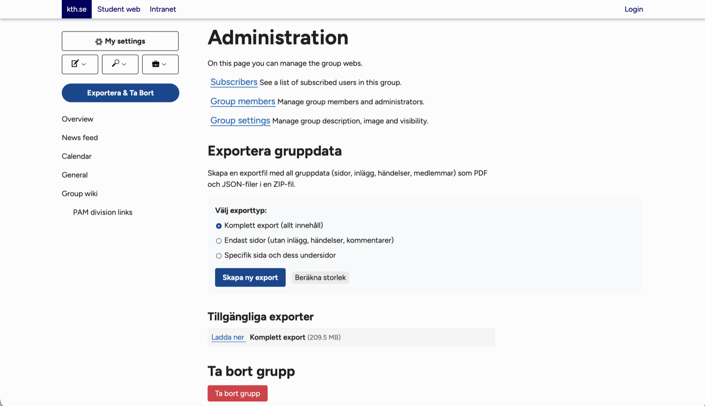
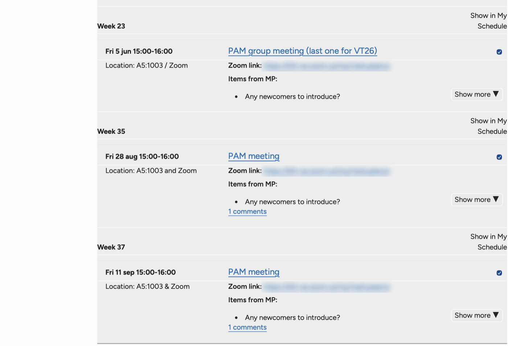
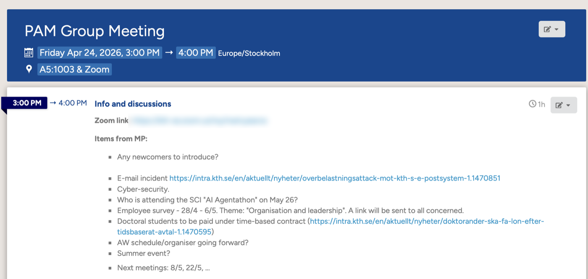

Översikt · design och integration
Ett mötes- och agendasystem — hur tjänsten är tänkt
att fungera och kopplas till KTH:s system
Christian Ohm School of Engineering Sciences (SCI), KTH
Bakgrund
Ett mötesagendasystem samlar:
Del 1 av 3
Open source, byggt för möten, i bruk sedan många år.
Indico · Översikt
Indico · Funktioner
Indico · Varför open source
Del 2 av 3
Hur tjänsten byggs och kopplas till KTH:s system.
Design · Översikt
Design · Drift
Design · Inloggning
Status: planerad
En registrering, tre knappar — som på SU:s fysikum:
Design · Organisation
Status: utreds
S → SH → SHR, knyter kategori till enhetDesign · E-post och dataskydd
Del 3 av 3
En KTH-profilerad Indico, med riktiga möten från gruppwebben.
Pilot · Utseende

KTH-profil: skola → institution → avdelning. Skölden markerar en skyddad kategori.

En avdelnings mötesserie, importerad från gruppwebben
Pilot · Migrering

Gruppwebben: Exportera & Ta bort → komplett export
Pilot · Före och efter

Förr: gruppwebbens kalender

Nu: mötet i Indico med tid, rum, anteckningar och bilagor
Läget
| Del | Status | Kommentar |
|---|---|---|
| Indico 3.3 med KTH-profil | i drift | pilot, indico.physics.kth.se |
| Import från gruppwebben | fungerar | skript med provkörning |
| Säkerhetskopior | i drift | återställningstest kvar |
| Inloggning via SWAMID/eduGAIN | planerad | lokala konton tills vidare |
| E-post via KTH:s relä | planerad | tillfällig lösning tills vidare |
| Organisation & grupper | utreds | källa och metod |
| Integritetspolicy, behandlingsregister | att göra | krävs före SWAMID |
| Central tjänst, slutlig adress | beslut | t.ex. indico.kth.se |
Piloten: indico.physics.kth.se — chohm@kth.se